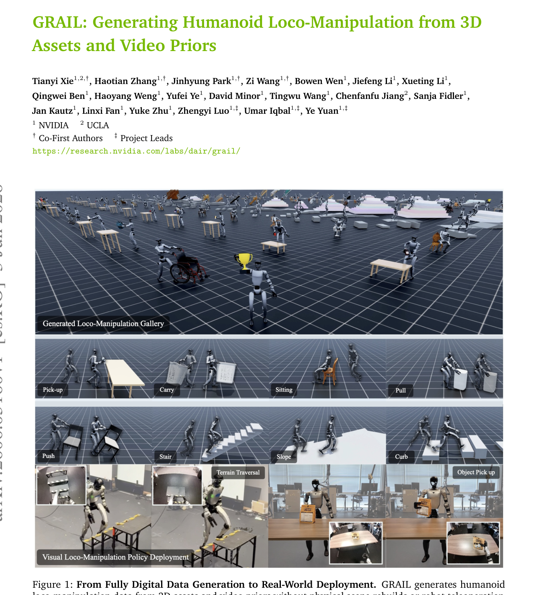
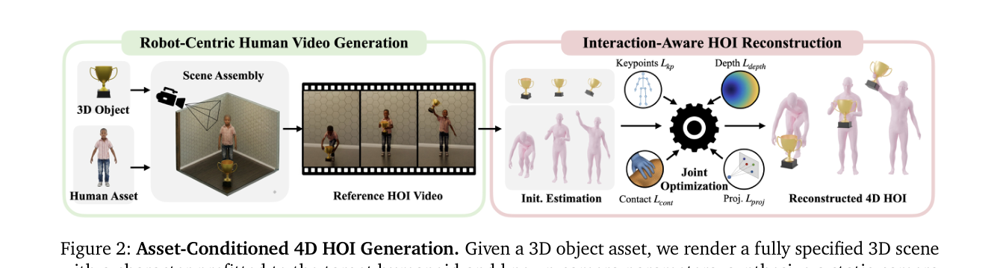
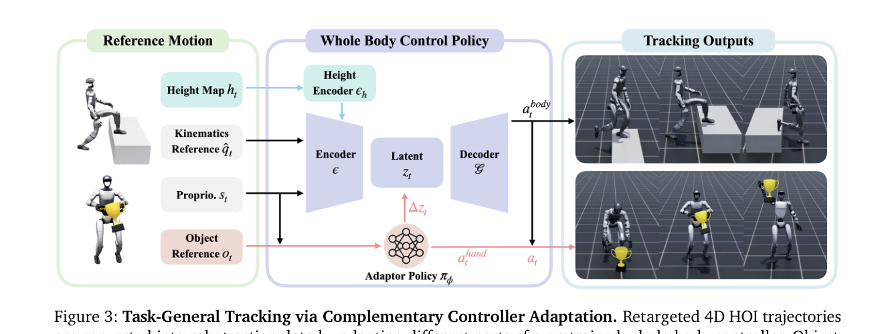
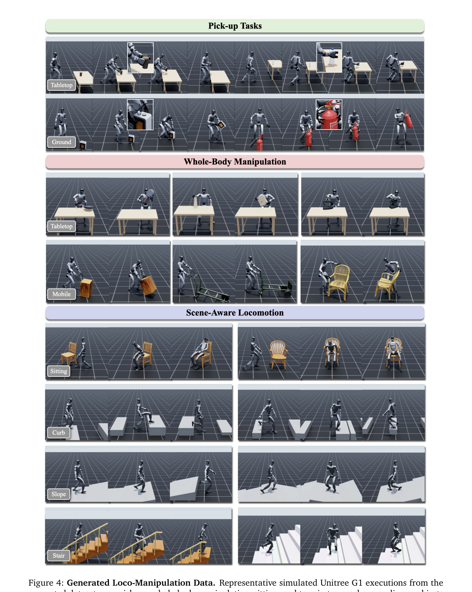
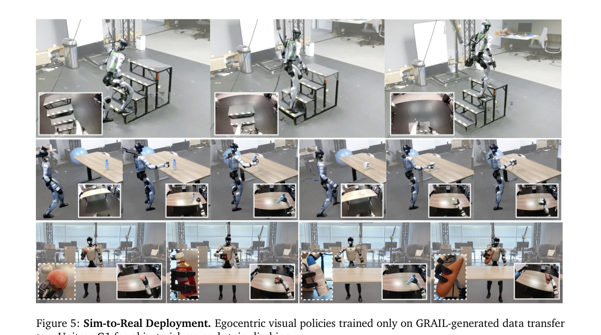

◆核心观点 · 证据
每条 = 中文论点 + 📍页/节 + 🔤逐字原文(Ctrl-F 锚点) + 🀄译文 + 💡解读。点开原文即可最短路径核对。

instead of recovering the entire 3D interaction from an uncontrolled video, can we first specify the 3D scene and then use video generative priors to synthesize diverse interactions for humanoid policy learning?
GRAIL starts from fully specified 3D configurations in which object geometry, camera parameters, metric scale, environment depth, and a robot-proportioned character are known before video generation and reused during reconstruction.

A VLM (OpenAI, 2024) generates an interaction prompt from the rendered frame, and a VFM (e.g., Kling (Kuaishou, 2025)) then synthesizes the reference HOI video {I_t}_{t=1}^T under a static-camera setting that preserves the known camera parameters (CK, CE) for reconstruction.
Although one could generate robot videos directly, current VFMs have stronger priors over human manipulation, and human body and hand reconstruction tools are more mature than robot reconstruction tools. We therefore synthesize human interaction videos using a character asset prefitted to the target humanoid, which facilitates retargeting the recovered motion to the robot.

L = λ_kp L_kp + λ_proj L_proj + λ_depth L_depth + λ_cont L_cont + λ_reg L_reg,
Rather than optimizing full trajectories directly, we optimize residual motion parameters {ΔΘ^H_t} and {ΔΘ^O_t}
(Δz_t, a^hand_t) = π_φ(s_t, o_t), a^body_t = G(z_t + λΔz_t),

we generate a large-scale loco-manipulation dataset for the Unitree G1 with 1,000 object assets sourced from Robocasa (Nasiriany et al., 2024), ComAsset (Kim et al., 2024), OMOMO (Li et al., 2023a), and Hunyuan3D (Team, 2025), paired with 1,000 procedurally generated terrain configurations. The resulting dataset contains over 20,000 sequences
GRAIL achieves the strongest performance across nearly all metrics: the lowest contact distance and penetration ratio, the highest interaction score, the smoothest object trajectories, and, by a large margin, the highest tracking success rate with the lowest body and object deviation.
Disabling the latent adaptor π_φ (i.e., vanilla SONIC) yields the lowest manipulation success rate despite the best body tracking, indicating that accurate body imitation alone is insufficient for object interaction.

For stair-climbing, a policy trained on diverse terrain-traversal sequences from GRAIL achieves a 90% real-world success rate, as shown in Fig. 5. For object pick-up, we train on 200 approach-and-pick-up sequences per object across cubes, apples, tea boxes, carrots, and wet wipes. The resulting policy achieves an 84% real-world success rate, as shown in Table 3, and transfers effectively to unseen objects, attaining an 80% success rate.
Reconstruction quality degrades under severe occlusion, fast motion, or inconsistent object appearance from the VFM, and the failure-filtering step discards a non-trivial fraction of sequences.
⎘开源状态
- 代码
- 未公开 论文未承诺 GitHub release
- 权重
- 未公开 tracker/visual policy checkpoint 均未提及
- 数据
- 未公开 20K+ 生成序列与 1K 资产管线均未承诺释出
- 项目页
- research.nvidia.com/labs/dair/grail（视频 demo）
- 外部依赖
- Kling（商用 VFM）、Infinigen、Blender、FoundationPose、GENMO、WiLoR、SAM2、MoGe-2、SONIC、GMR、Isaac Lab
https://research.nvidia.com/labs/dair/grail/
⚖批判 · 评级
把"先指定 3D 场景再用 VFM 生视频"这个倒置范式跑成端到端可工作的人形数据流水线，且把每一步（4D 重建损失、tracker 架构、sim2real 蒸馏）都用受控对比验证。HOI 生成质量主表上 88.9% vs 24% 的 4× 差距，加上零真机数据下 84%/90% 的真机成功率，是非常强的工程结果。Table 2 的"去掉 π_φ → 身体追踪反而最好但操作 SR 最低"是教科书级反例。
① 完全依赖 Kling 等商用 VFM 与多个外部预训练模型（SONIC/GENMO/FoundationPose/WiLoR/MoGe-2），范式可复现性差；② 关键参数 ——失败过滤丢弃比例、20K 序列的成本/吞吐——均未披露；③ 真机抓取仅 5 类已见 + 5 类未见，每类 10 trials，统计样本小；④ 物理执行率 88.9% 的"成功"阈值放在 0.25 归一化偏差，是相对宽松的标尺；⑤ VFM 的物体外观漂移问题在 Limitations 自承但无量化补救；⑥ 与同年 WholeBodyVLA / VideoMimic 等"从真人视频学"路线缺少直接对比。
评级：Important 在 humanoid 数据范式上做出明确转向（"don't reconstruct uncontrolled video, generate inside a known 3D scene"），具备社区参考价值；但因严重外部依赖 + 未开源，不算 Breakthrough。